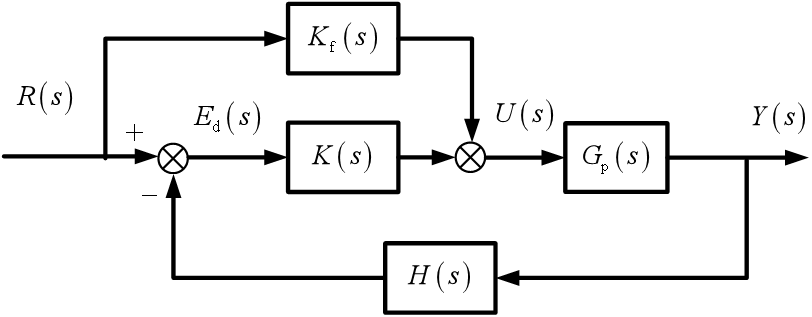
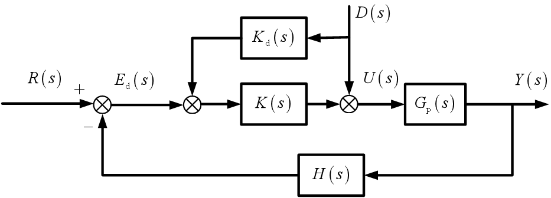
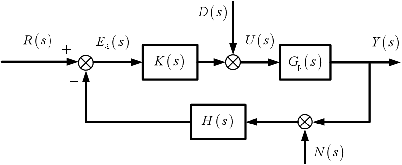

线性系统的时域分析法
本章主要介绍线性控制系统的时域分析方法，包含两个核心部分：稳态误差分析和时域性能指标。重点讲解误差概念、误差常数、系统型别以及动态性能指标。
本章学习目标
- 掌握稳态误差的基本概念和计算方法
- 理解典型激励信号及其物理意义
- 掌握误差常数（Kp、Kv、Ka）的定义和计算
- 理解系统型别的概念及其与误差的关系
- 掌握时域性能指标的定义和计算方法
- 了解减小稳态误差的措施和方法
章节内容概述
3.2.1 稳态误差的基本概念
3.2.2 典型激励信号
3.2.3 误差常数与系统型别
3.2.4 减小稳态误差的措施
3.2.5 扰动引起的系统误差
3.3.1 时域性能指标概述
3.3.2 动态/暂态性能指标
3.3.3 实践练习与小结
笔记说明：本笔记基于PPT内容整理，补充了必要的公式推导和解释说明，确保内容完整性。
稳态误差的基本概念
误差的定义
误差：输出信号相对于输入信号的偏差，记作。
对于反馈控制系统，误差通常定义为：
其中：
- ：参考输入信号
- ：系统输出信号
稳态误差的定义
稳态误差：当时间趋于正无穷时，输出信号相对于输入信号的偏差，记作。
数学表达：
误差的两种表示形式
-
误差反馈形式：
R(s) → ⊕ → E(s) → [T(s)] → Y(s) ↑ (-) └───────┘ -
偏差形式：
R(s) → ⊕ → E(s) → [G(s)] → Y(s) ↑ (-) └───────┘
终值定理的应用
对于稳定的系统，可以使用终值定理计算稳态误差：
其中是误差的拉普拉斯变换。
典型激励信号
控制系统分析中常用的三种典型激励信号：
1. 阶跃信号（Step Signal）
物理意义：位置恒定
时间函数：
像函数：
应用示例：位置跟踪控制，如卫星的轨道平面控制、天线的指向控制。
2. 斜坡信号（Ramp Signal）
物理意义：速度恒定
时间函数：
像函数：
应用示例：速度跟踪控制，如卫星的对地观测、移动目标的跟踪。
3. 抛物信号（Parabola Signal）
物理意义：加速度恒定
时间函数：
像函数：
应用示例：加速度跟踪控制，如导弹等加速移动目标的跟踪。
重要结论
输入信号类型的不同会导致系统误差规律不同。系统对不同类型信号的跟踪能力不同，这反映了系统的"型别"特性。
误差常数与系统型别
单位负反馈系统
考虑单位负反馈系统：
R(s) → ⊕ → E(s) → [G(s)] → Y(s)
↑ (-)
└───────┘
闭环传递函数：
误差传递函数：
稳态误差计算
应用终值定理：
对于不同类型的输入信号：
1. 阶跃输入
定义位置误差常数：
则：
2. 斜坡输入
定义速度误差常数：
则：
3. 抛物输入
定义加速度误差常数：
则：
系统型别的定义
将开环传递函数表示为：
其中：
- ：开环增益
- ：积分环节的个数
系统型别：定义为开环传递函数中纯积分环节的阶数。
- 0型系统：
- I型系统：
- II型系统：
- III型系统：（理论上存在，实际较少使用）
误差常数与系统型别的关系
| 系统型别 | 位置误差常数 | 速度误差常数 | 加速度误差常数 |
|---|---|---|---|
| 0型 | （有限值） | 0 | 0 |
| I型 | ∞ | （有限值） | 0 |
| II型 | ∞ | ∞ | （有限值） |
| III型 | ∞ | ∞ | ∞ |
稳态误差与系统型别的关系
| 输入类型 | 0型系统 | I型系统 | II型系统 |
|---|---|---|---|
| 阶跃输入 | 0 | 0 | |
| 斜坡输入 | ∞ | 0 | |
| 抛物输入 | ∞ | ∞ |
重要结论：
- 系统型别决定了系统能够无误差跟踪的信号类型
- 0型系统只能跟踪阶跃信号（有静差）
- I型系统可以无误差跟踪阶跃信号，有差跟踪斜坡信号
- II型系统可以无误差跟踪阶跃和斜坡信号，有差跟踪抛物信号
减小稳态误差的措施
1. 提高系统型别
在前向通路中增加积分环节，可以提高系统型别：
- 增加一个积分环节：0型→I型
- 增加两个积分环节：0型→II型
优点：可以消除对某些类型信号的稳态误差
缺点：可能降低系统稳定性，需要谨慎设计
2. 增大开环增益
增大开环增益可以减小稳态误差：
- 对于0型系统：（当很大时）
- 对于I型系统：
优点：简单有效
缺点：可能引起系统不稳定，放大测量噪声
3. 复合控制（前馈+反馈）
基于输入补偿的复合控制减小系统的稳态误差
系统结构：

- R(s)：输入信号
- K f(s)：前馈控制器（需设计为受控对象的逆系统）
- K(s)：反馈控制器
- G p(s)：受控对象
- H(s)：反馈环节
- E d(s)：偏差信号；U(s)：控制信号；Y(s)：输出信号
误差表达式
前馈控制器设计
其中 是受控对象的逆系统，用于抵消的传递特性。
基于扰动补偿的复合控制
系统结构：

- R(s)：输入信号；D(s)：外部扰动信号；N(s)：测量噪声
- K(s)：反馈控制器；K d(s)：扰动前馈控制器
- G p(s)：受控对象；H(s)：反馈环节
- E d(s)：偏差信号；U(s)：控制信号；Y(s)：输出信号
加入扰动补偿后的输出（前馈 + 反*Kd*(s) 后，输出变为：
前馈控制器设计：为完全抵消扰动影响，需让扰动对输出的作用为 0，因此令：
其中是反馈控制器 的逆系统，用于抵消扰动通过反馈通道对输出的影响。
4. 灵敏度分析与鲁棒控制
考虑参数变化对系统性能的影响，设计对参数变化不敏感的鲁棒控制系统。
灵敏度定义：
设计目标：减小系统对参数变化的灵敏度，提高鲁棒性。

- R(s)：参考输入；E d(s)：偏差信号；K(s)：控制器
- D(s)：扰动输入；Gp(s)：被控对象；Y(s)：系统输出
- N(s)：测量噪声；H(s)：反馈环节
误差与灵敏度分析 系统误差 由参考输入、扰动、测量噪声共同贡献；而“误差对被控对象 变化的灵敏度”，体现了闭环系统对模型偏差的抗干扰能力（灵敏1.开环传递函数：
2.灵敏度函数：
3.误差表达式： 4.误差对被控对象的灵敏度： 要不要我帮你整理一份该知识点的核心公式总结表？
扰动引起的系统误差
扰动误差分析
考虑有扰动的系统：
D(s)
↓
R(s) → ⊕ → ⊕ → [G(s)] → Y(s)
↑ (-)
└───────┘
输出对扰动的传递函数：
扰动引起的误差：
减小扰动误差的措施
- 提高前向通路增益：增大的增益
- 增加积分环节：在控制器中增加积分环节
- 扰动补偿：采用前馈补偿消除扰动影响
- 鲁棒设计：设计对扰动不敏感的控制系统
测量噪声的影响
测量噪声会通过反馈通路影响系统性能：
N(s)
↓
R(s) → ⊕ → ⊕ → [G(s)] → Y(s)
↑ (-) ↑
└───────┘
输出对测量噪声的传递函数：
重要结论：增大开环增益可以降低输入和扰动引起的误差，但会放大测量噪声引起的误差。"精准"的控制需要"精准"的测量。
时域性能指标概述
性能指标的分类
控制系统的性能指标可以分为两大类：
-
稳态性能指标：反映系统稳态精度
- 稳态误差
- 静态误差常数
-
动态/暂态性能指标：反映系统动态特性
- 上升时间
- 峰值时间
- 调节时间
- 超调量
测试条件
时域性能指标通常在以下条件下定义：
- 零初始条件：系统初始状态为零
- 单位阶跃输入：
- 稳定系统：系统必须是稳定的
3.3.2 动态/暂态性能指标
1. 上升时间
定义：响应曲线从稳态值的10%上升到90%所需的时间。
物理意义：反映系统响应的快速性。越小，系统响应越快。
计算方法：
对于二阶系统：
其中：
2. 峰值时间
定义：响应曲线超过稳态值达到第一个峰值所需的时间。
物理意义：反映系统达到最大超调的时间。
计算方法：
对于二阶系统：
3. 超调量
定义：输出量的最大值与稳态值之差与稳态值的百分比。
数学表达：
物理意义：反映系统响应的平稳性。越小，系统响应越平稳。
计算方法：
对于二阶系统：
4. 调节时间
定义：响应曲线达到并保持在容许误差范围（通常为±5%或±2%）所需的最短时间。
物理意义：反映系统过渡过程的持续时间。越小，系统快速性越好。
计算方法：
对于二阶系统：
- ±5%误差带：
- ±2%误差带：
性能指标之间的关系
-
快速性与平稳性的矛盾：
- 减小和（提高快速性）通常需要增大
- 减小（提高平稳性）需要增大
- 但过大会降低快速性
-
设计权衡：
- 工程上通常取作为最佳阻尼比
- 此时，兼顾快速性和平稳性
无振荡响应
对于过阻尼系统（）和临界阻尼系统（）：
- 没有峰值时间和超调量的指标
- 性能主要由上升时间和调节时间描述
3.3.3 实践练习与小结
练习 3.2.1：误差常数计算
已知单位负反馈系统的开环传递函数：
求：
- 系统的型别
- 位置误差常数
- 速度误差常数
- 加速度误差常数
- 单位阶跃输入下的稳态误差
- 单位斜坡输入下的稳态误差
解答：
- 系统型别：I型（有1个积分环节）
- 单位阶跃输入：
- 单位斜坡输入：
练习 3.2.2：系统型别判断
判断以下系统的型别：
解答：
- 0型系统（无积分环节）
- I型系统（1个积分环节）
- II型系统（2个积分环节）
- II型系统（2个积分环节）
练习 3.2.3：稳态误差计算
已知单位负反馈系统的开环传递函数：
求：
- 使系统稳定的K值范围
- 当时，单位阶跃输入下的稳态误差
- 当时，单位斜坡输入下的稳态误差
- 要求单位斜坡输入下的稳态误差，求K的最小值
解答：
-
特征方程：
劳斯表：1 10 7 K 0 K 稳定条件： 且 ⇒
-
时，
单位阶跃输入：（I型系统）
单位斜坡输入： -
要求 ⇒
⇒
但稳定条件要求，矛盾。结论：无法同时满足稳定性和稳态误差要求，需要重新设计系统结构。
练习 3.3.1：性能指标计算
已知二阶系统的传递函数：
其中 rad/s，，求：
- 上升时间
- 峰值时间
- 超调量
- 调节时间（±5%误差带）
解答：
-
rad/s
rad
s -
s
-
-
s
练习 3.3.2：系统设计
设计要求：
- 单位阶跃响应的超调量
- 调节时间 s（±2%误差带）
- 上升时间尽可能小
求满足要求的和范围。
解答：
-
⇒
解得： -
s ⇒ ⇒
-
，要使最小，需要最大且最小
综合：取，则 rad/s
取 rad/s可满足所有要求。
3.3.4 小结与总结
核心概念总结
稳态误差部分
- 误差定义：输出相对于输入的偏差
- 稳态误差：
- 误差常数：
- 位置误差常数
- 速度误差常数
- 加速度误差常数
- 系统型别：开环传递函数中积分环节的个数
- 型别与误差关系：
- 0型系统：有差跟踪阶跃信号
- I型系统：无差跟踪阶跃，有差跟踪斜坡
- II型系统：无差跟踪阶跃和斜坡，有差跟踪抛物
时域性能指标部分
- 上升时间：10%~90%稳态值的时间，反映快速性
- 峰值时间：达到第一个峰值的时间
- 超调量：最大超调百分比，反映平稳性
- 调节时间：进入误差带的时间，反映过渡过程持续时间
重要方法总结
稳态误差分析方法
- 判断系统是否为单位负反馈结构
- 计算开环传递函数
- 确定系统型别
- 计算相应的误差常数
- 根据输入类型计算稳态误差
性能指标计算方法（二阶系统）
- 自然频率和阻尼比
- 阻尼振荡频率
- 角度
- 应用公式计算各性能指标
减小稳态误差的措施
- 提高系统型别（增加积分环节）
- 增大开环增益
- 采用复合控制（前馈补偿）
- 扰动补偿
- 鲁棒设计降低灵敏度
设计权衡与工程考虑
-
稳定性与精度的矛盾：
- 提高型别和增益可减小误差，但可能降低稳定性
- 需要平衡稳定性和精度要求
-
快速性与平稳性的矛盾：
- 减小和需要增大
- 减小需要增大
- 最佳折衷：
-
噪声与精度的矛盾：
- 增大增益减小误差，但放大测量噪声
- 需要"精准"的测量实现"精准"的控制
-
鲁棒性与性能的矛盾：
- 高增益系统对参数变化敏感
- 需要鲁棒设计保证性能一致性
关键公式回顾
-
稳态误差公式：
- 阶跃输入：
- 斜坡输入：
- 抛物输入：
-
二阶系统性能指标：
- （±5%）或 （±2%）
-
阻尼振荡频率：
工程应用价值
- 控制系统设计：根据性能要求确定系统结构和参数
- 性能评估：评估现有系统的稳态和动态性能
- 控制器整定：调整控制器参数满足性能指标
- 系统改进：识别性能瓶颈并采取改进措施
- 鲁棒性分析：分析参数变化对性能的影响
常见错误与注意事项
- 单位负反馈假设：误差常数定义基于单位负反馈系统
- 稳定性前提：终值定理和性能指标计算要求系统稳定
- 型别判断错误：正确识别积分环节个数
- 公式适用条件：性能指标公式仅适用于二阶系统
- 设计矛盾忽视：注意稳定性、精度、快速性、平稳性之间的矛盾
稳态误差和时域性能指标是控制系统设计的核心内容。通过本章学习，应能熟练分析系统的稳态和动态性能，根据性能要求设计合适的控制系统结构，并在各种矛盾要求之间找到最佳平衡点。